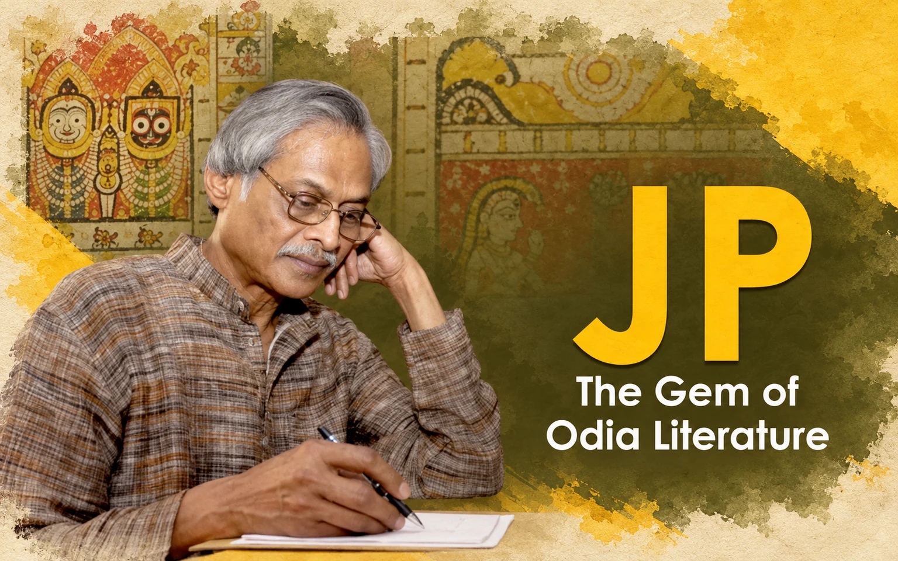

Missing Memories
JP – The Gem of Odia Literature

Jagannath Prasad Das, more famous as JP or JP Das, is a very familiar name in not only Odia Literature but also in pan-Indian literature and cultural circles.
Born in 1936 in Cuttack he graduated from Ravenshaw College, Cuttack, and had his post-graduation in Allahabad University, then a favorable destination for IAS aspirants. For a brief period, he was an Assistant Professor at Allahabad University and then his dreams came true.
He got selected and joined IAS. He also got the Odisha cadre of his choice and served for a few years in bureaucracy before leaving for an independent life. His tenure as Collector, Kalahandi district was quite eventful in the days when Kalahandi was synonymous with hunger and destitution. He resigned from IAS quite early and moved to Delhi to become a full-time scholar and writer instead of leading a cozy life.
As a scholar he received the prestigious Homi Bhabha Fellowship (1979-81) for research in Pata paintings of Odisha, Emeritus Fellowship from the Ministry of Culture, Government of India (1994-96), and K. K. Birla Foundation Fellowship in Comparative Literature (1996-98). His pioneering works as a scholar and researcher get widely acknowledged nationally and internationally. Due to his efforts, the Pata paintings of Puri have gained international recognition.
As a writer, he delved into multiple areas including poetry, short stories, novels, plays, and children’s literature. Besides, he is a very distinguished editor and translator. He has successfully established his credentials in all the fields of literature with equal distinction. He had his unique style and he experimented with new elements in his writings. As I remember when he started the Bhabanath series of short stories in the early eighties it created a sensation.
In 1991 his magnum opus Desha Kala Patra, a historical novel, came out and it was widely appreciated. I had presented about half a dozen copies to different friends on occasions like marriage receptions. Deservingly he received the Odisha Sahitya Academy award, Central Sahitya Akademi award, Sarala Award, and Saraswati Samman for his contributions to literature.
When JP was associated with the Children’s Film Society of India as one of its key functionaries he had come on an official visit to Bhubaneswar around 1985 and was staying in the Kalinga Ashoka Hotel, the only star hotel in Bhubaneswar at those days. Dipak Samantrai, my esteemed friend and colleague in All India Radio, Cuttack had fixed an appointment with him for an interview and invited me to join for the said interview. On a fateful morning we reached the hotel and knocked at his door, the famous film actress and director Parbati Ghosh, who was present then, opened the door for us. JP came in smiling and greeted us with a smile.
His warmth of affection for two young writers was unforgettable. Madam Parbati Ghosh served us coffee that day and it became a memorable day for us. The interview was as usual very informal and interesting. He answered all our questions with ease. We were enamored by his impressive personality and depth of knowledge. Dipak took some snaps with his camera and the interview got published a few days later.
Although staying in Delhi, he used to drop in Bhubaneswar frequently and got noticed in literary gatherings in the company of fellow writers. He also used to conduct regularly each year Poetry Workshops for budding poets in the Regional College of Education, Bhubaneswar under the auspices of the Poetry Society of India. It continued for some years. Just three years back one evening I spotted him at a literary get-together and asked him when did he arrive.
To my surprise, he said that he had shifted to Bhubaneswar after the Delhi environment didn’t suit him and doctors advised him to leave Delhi for his health. Now he’s spending his days in his old house in Suryanagar, Bhubaneswar. With falling health, he is avoiding meetings and social gatherings by politely refusing such invitations. But he is very much active on social media and his posts carry lots of information about literature and culture. He has a good collection of old letters and documents having archival values.
He is acquainted with living in the shadows of his glorious past. No regrets, no obsessions.
Leave a thought
Likes and comments will open soon.